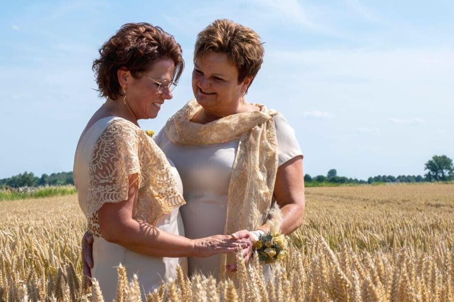
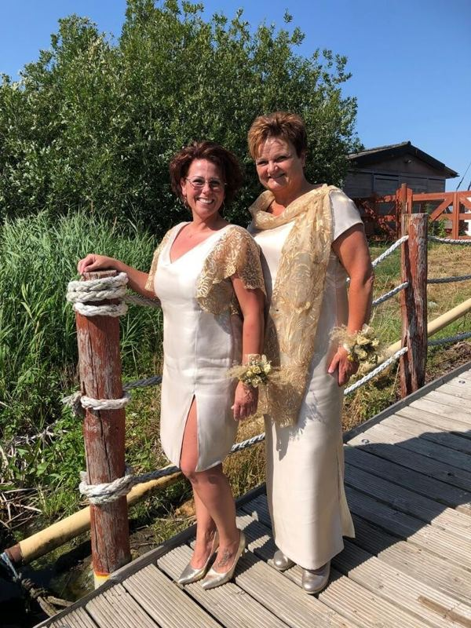
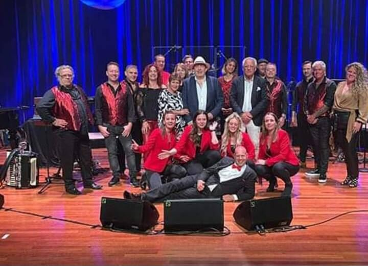
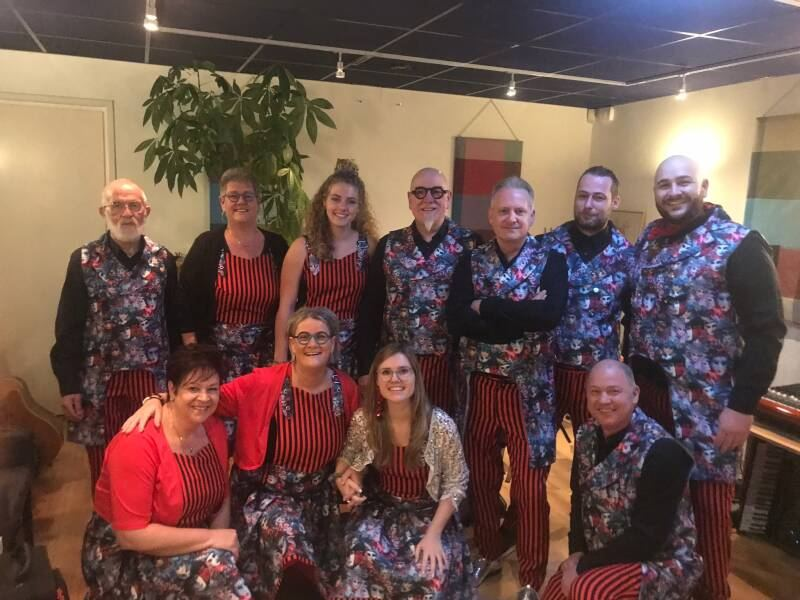
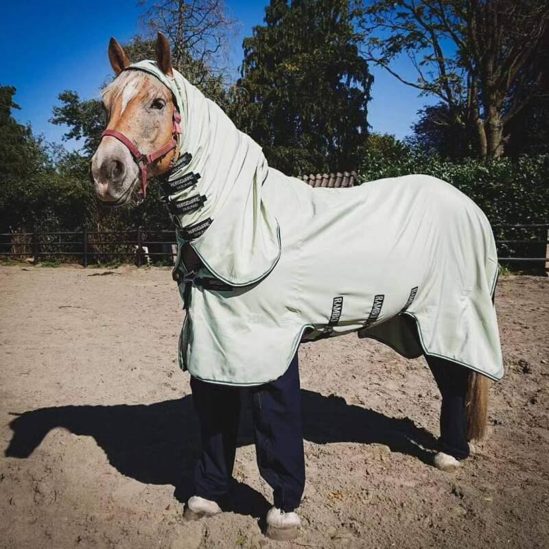
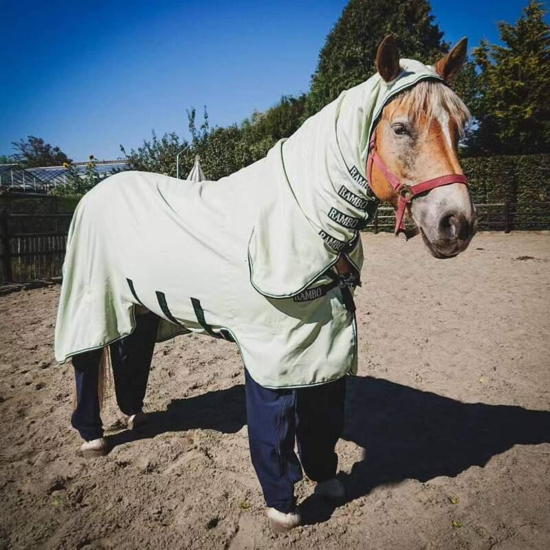
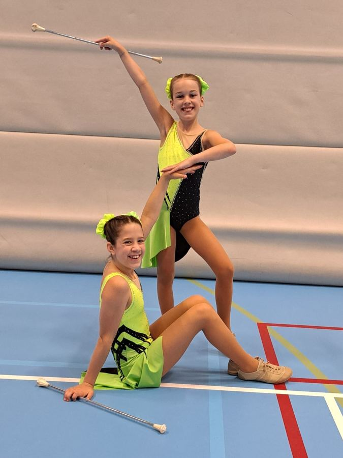
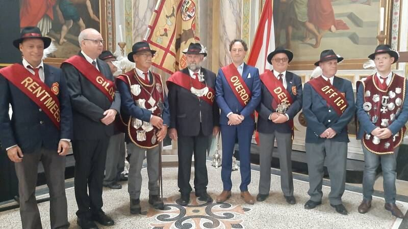

Speciale opdrachten
Trouwkleding, pakken voor carnaval, kleding voor verenigingen en orkesten. Heeft u iets bijzonders in gedachten? Vraag het gerust.

Trouwkleding voor een bruidspaar
Het voorrecht om voor een bruidspaar hun trouwkleding te mogen maken.


Kleding voor orkesten
In 2021 maakte het Ateljeeke 9 gilets voor het orkest van de Brabantse zanger Leen Zijlmans, voor zijn show 50 jaar Leen.
In 2022 volgde de opdracht van de Vogelmuzikanten uit Oud Gastel om ze te voorzien van nieuwe kleding. Wederom een grote uitdaging.


Een vliegendeken met 'benen'
Een hele bijzondere vraag: of ik aan een paardendeken een soort van 'benen' kon maken. Het paard had een allergie voor stalvliegen, waardoor hij zijn benen kapot beet.
Ik ben de uitdaging aangegaan, al zei ik er wel bij dat ik niet wist of het zou lukken. Na de eerste pasbeurt bleek dat ik de benen aan het borststuk had gezet... Maar de missie is geslaagd.


Twirlpakjes en sjerpen
De eerste grote opdracht, net na de start in 2020, kwam van Schuttersgilde Sint Sebastiaan uit Oudenbosch: nieuwe sjerpen. Iets wat ik nog nooit had gemaakt, maar de opdracht is toch aangenomen.
In 2024 volgden twirlpakjes. Ook een opdracht die specialistische ervaring vraagt.
Neem contact opLangskomen of contact
Loop binnen tijdens de openingstijden, of bel of app voor een afspraak.
Dian's Ateljeeke
Een vraag over een reparatie of een opdracht? Bel of stuur een WhatsApp.
Openingstijden
En op afspraak.
In die week worden alle reparaties, bestellingen en achterstanden weggewerkt.
- November 23 t/m 27 nov
- December 21 dec t/m 5 jan
- Januari 25 t/m 29 jan
- Februari 23 t/m 27 feb
- Maart 22 t/m 26 mrt
- April 26 t/m 30 apr
- Mei 24 t/m 28 mei
- Juni 28 jun t/m 3 jul
- Juli 27 t/m 31 jul